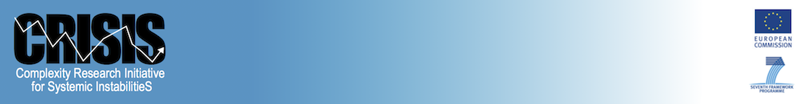

This document is the
API specification for the Crisis-Mason API for Agent-Based Economic
Simulations.
The models and tools used by central banks, finance ministries, and regulators today generally rely on three strong assumptions: 1) that households, firms, and governments are perfectly rational and are homogeneous in their behaviors, 2) that markets always clear and the economy settles into a balanced equilibrium state, and 3) that the detailed institutional structures and interconnections of the financial system, i.e. the 'plumbing' of the system, does not generally matter for macro policy.
While models relying on these assumptions may provide 'good enough' answers during normal times, during the crisis they proved highly inadequate. The crisis was characterized by behaviors that did not fit the 'perfectly rational' models, markets that failed to clear, severe economic imbalances that were far from equilibrium, and micro level features of the system and network structures of interconnection between institutions had major systemic impacts.
The CRISIS project will seek to address these limitations by building a next generation macroeconomic and financial system policymaking model. The CRISIS model will be a bottom-up 'agent-based' simulation that fully accounts for the heterogeneity of households, firms, and government actors. The model will incorporate the latest evidence from behavioral economics in portraying agent behavior, and the CRISIS team will also collect new data on agent decision making using experimental economics techniques. While any model must make simplifying assumptions about human behavior, the CRISIS model will be significantly more realistic in its portrayal of relevant agent behavior than the current generation of policymaking models.
Using an agent-based approach, the CRISIS model will not be constrained to market clearing, equilibrium behaviors. It will be able to realistically model market dysfunction and non-equilibrium dynamics. Critical features of the crisis included self-amplifying feedback from herd behavior, and cascades of contagion spreading from one asset class and geography to another. These behaviors are difficult to model with traditional linear, equilibrium based approaches, but will be captured by the CRISIS model.
CRISIS will also explicitly model the network and institutional structure of the financial system and its interconnections to the larger macro economy. As the collapse of Lehman Brothers showed, some institutions are 'too connected to fail' and the system's micro level structure can have macro level consequences. Recent work by academics and central banks has further shown the importance of incorporating network structure in our understanding of systemic risk.
The CRISIS project will be unique in not just producing an agent-based model that captures stylized behaviors of the macroeconomic-financial system, but will parameterize and test the model with empirical data. A major part of the project will involve the construction of key micro and macro databases for model calibration and validation. CRISIS will initially focus on data for the EU financial system and macro economy, but the model will be extendable to other regions and eventually the global system.
CRISIS will also seek to be state of the art in usability and transparency for policy decision makers. Another limitation of current tools is that they are often a 'black box' with little transparency and are difficult to work with. Agent-based models have an intuitive, transparent structure – the CRISIS model will explicitly show the behavior of individual households, financial institutions, firms, and government entities, and the relationships and feedbacks between them. The CRISIS model will also have a gaming interface to allow decision makers and other stakeholders to directly interact with the model, and leading edge visualization and scenario analysis tools.
To find more information, please visit: